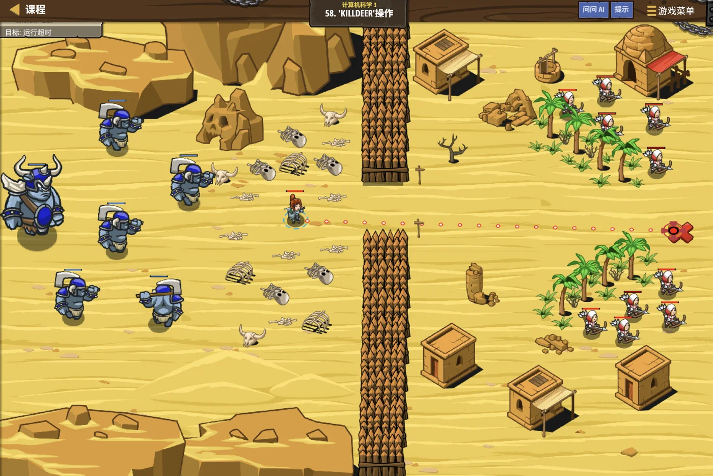
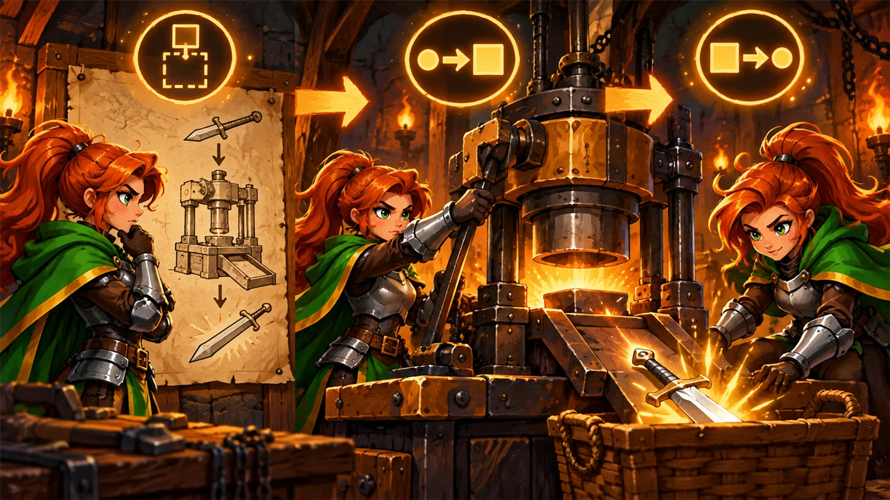

奥卡把石臂往墙上一指：与其抄十遍，不如造一台机器。
你写下一个函数，起名叫
gotoAndGet——
参数是坐标，动作是走过去并把东西捡起来。之后你只要喊名字就行了。他说，这就是函数最大的用处：让主程序变得清爽。
return 把结果带出来return 和 cout 的区别return 的作用与 void 的含义| 本单元小节 | 对应考纲条目 | 真题常考形式 |
|---|---|---|
| 1 为什么要用函数 | 函数与模块化 | 用函数比复制代码好在哪里 |
| 2 定义与调用 | 函数的定义与调用 | 不调用会不会执行；返回值类型写什么 |
| 3 参数 | 参数的传递 | 形参与实参；参数个数要不要对上 |
| 4 返回值 | return 语句 | return 与 cout 的区别（必考） |
| 5 函数声明 | 函数的声明 | 是不是必须"既声明又定义" |
// 没有函数：同样的代码抄了三遍
cout << "正在治疗..." << endl;
hero.hp += 10;
if (hero.hp > 100) hero.hp = 100;
cout << "治疗完成" << endl;
cout << "正在治疗..." << endl;
hero.hp += 10;
if (hero.hp > 100) hero.hp = 100;
cout << "治疗完成" << endl;
cout << "正在治疗..." << endl;
hero.hp += 10;
if (hero.hp > 100) hero.hp = 100;
cout << "治疗完成" << endl;void heal() {
cout << "正在治疗..." << endl;
hero.hp += 10;
if (hero.hp > 100) hero.hp = 100;
cout << "治疗完成" << endl;
}
// 主程序里只要喊三次名字
heal();
heal();
heal();int add(int a, int b) { // ①返回类型 ②函数名 ③参数列表
int s = a + b; // ④函数体
return s; // 把结果交出去
}
int main() {
int x = add(3, 5); // ★ 调用：喊名字 + 传参数
cout << x << endl; // 8
cout << add(10, 20) << endl; // 30 直接用返回值
return 0;
}int add(int a, int b) { ... }; 多这个分号虽然多数情况下能过，
但在有些编译器上会带来麻烦，养成不写的习惯。| 返回类型 | 含义 | 例子 |
|---|---|---|
int、double、char 等 | 函数会交回一个该类型的值 | int add(int a, int b) |
bool | 交回"真 / 假" | bool isPrime(int n) |
void | 什么都不交回，只是"干件事" | void heal() |
return s; 把 s 交给调用者。return 之后的代码一律不再执行。return 只能交回一个值——
想要"带出多个结果"，得靠后面要学的引用参数或指针。
上面的 heal() 每次都加 10。如果想加不同的量呢？用参数。
void heal(int amount) { // amount 是"形参"
hero.hp += amount;
if (hero.hp > 100) hero.hp = 100;
}
heal(10); // 10 是"实参"
heal(30); // 加 30
heal(5); // 加 5// 多个参数：用逗号隔开，每个都要写类型
int maxOf(int a, int b) {
return a > b ? a : b;
}
cout << maxOf(3, 7) << endl; // 7
// 默认参数：调用时可以不写
void greet(string name, string hi = "你好") {
cout << hi << "，" << name << endl;
}
greet("小明"); // 你好，小明
greet("小红", "早上好"); // 早上好，小红int a, int b，不能写 int a, b；int add(int a, int b)，调用时写成 add(3)
编译就过不去——少给了一个参数。add(3, 5, 7) 也不行——多给了。很多函数不是"干件事"，而是"算个结果给你"。这时候就要用 return。
int square(int n) {
return n * n;
}
// 返回值能直接参与运算
int total = square(3) + square(4);
cout << total << endl; // 9 + 16 = 25
// 也能作为别的函数的参数
cout << square(square(2)) << endl; // square(4) = 16
// 也能直接输出
cout << square(5) << endl; // 25| 写法 | 含义 | 怎么用 |
|---|---|---|
int f() { return 5; } | 交回一个值 | int x = f(); |
void f() { cout << "hi"; } | 什么都不交回 | f(); 不能写 int x = f(); |
return;（在 void 函数里） | 只是提前结束函数 | 常用于"不满足条件就退出" |
cout 是"说给人听"——把内容显示在屏幕上，
程序里拿不到它的结果。return 是"把东西交给程序"——调用者可以接着用它做运算、比较、传参。void f() { cout << 5; } —— 屏上显示出 5，但你没法写 f() + 1；int g() { return 5; } —— g() + 1 就是 6，可以随便参与运算。// ✘ 这样写在 C++ 里会报错
int main() {
cout << add(3, 5); // 编译器这时还不知道 add 是什么
return 0;
}
int add(int a, int b) { // 定义在后面
return a + b;
}add，不知道它有几个参数、返回什么类型int add(int a, int b); // ★ 函数声明（也叫"函数原型"）
// 只有分号，没有函数体
int main() {
cout << add(3, 5) << endl; // 8
return 0;
}
int add(int a, int b) { // 定义写在后面
return a + b;
}gotoAndGet——
参数是坐标，动作是走过去并把东西捡起来。思路：把"去某个坐标、把附近的东西捡起来"封进一个函数， 主程序里就只剩下一句句"喊名字"。

#include <iostream>
using namespace std;
// 去 (x, y) 这个位置，并把附近的东西捡起来
void gotoAndGet(int x, int y) {
hero.moveXY(x, y);
int item = hero.findNearestItem();
if (item) {
hero.moveXY(item.pos.x, item.pos.y);
}
}
int main() {
// 主程序只剩下"喊名字"，一目了然
gotoAndGet(20, 35);
gotoAndGet(60, 35);
gotoAndGet(60, 10);
gotoAndGet(20, 10);
return 0;
}gotoAndGet(20, 35);，你立刻知道它在干什么；
而如果换成五行的具体动作，你就得逐行去读。


int main() 里必须喊一声它的名字，函数体才会执行。cout 当成了返回值。
cout 只是把内容显示在屏幕上，
它没有把任何东西交给调用者。return。cout，要交回值用 returnreturn。
int，
函数体里却一个 return 都没有——void，就必须有 returnvoid 函数里用返回值。
void 的意思是"什么都不交回"。f();，不能写 int x = f();——编译器会直接报错。void 函数不能取值；参数个数要匹配前 2 题改编自 C++ 四级真题，其余为原创练习题。
int add(int a, int b);20。（ ）void change(int x) { x = 20; }
int main() {
int x = 10;
change(x);
cout << x;
return 0;
}
change(x) 时，
把外面 x 的值复制一份给了形参。void change(int *p) { *p = 20; }，
调用时写 change(&x);。cout，调用处就能拿到那个值void 类型的函数不能有返回值，调用时也不能把它当成一个值来用return，每次返回多个值return 都一样，编译器会自动返回最后一个变量
void 的含义就是"不交回任何值"，
所以调用它只能写成 f();，
不能写 int x = f();。cout 只负责"显示"，不会把值交给调用者。
要交回值必须用 return。return（在不同分支里），
但每次执行只会走其中一个，而且一次只能交回一个值。void 时必须有 return，
否则调用处会拿到一个不确定的值。int f(int n) {
if (n <= 0) return 0;
return n + f(n - 1);
}
cout << f(3) << endl;
3 B.6 C.9 D.死循环f(3) = 3 + f(2)f(2) = 2 + f(1)f(1) = 1 + f(0)f(0) = 0 ← 这里触发了"出口"，不再往下递归if (n <= 0) return 0;——
没有它，函数就会无限地自己调自己（D 项）。return，
但每次执行只会走其中一个——这正好印证了上一题的 C 项。int add(int a, b) 是不允许的。（ ）int add(int a, int b)int add(int a, b) ——
编译器不认识 b 是什么类型，直接报错。int a, b; 是合法的，
因为类型只写一次就够。bool isPrime(int n)
判断 n 是否为质数；在 main 里读入一个整数并输出判断结果
（是质数输出 yes，否则输出 no）。#include <iostream>
using namespace std;
bool isPrime(int n) {
if (n < 2) return false; // 小于 2 的都不是质数
for (int i = 2; i * i <= n; i++) { // 只试到 √n
if (n % i == 0) return false; // 找到一个因数，立刻结束
}
return true; // 全试完都没找到 → 是质数
}
int main() {
int n;
cin >> n;
cout << (isPrime(n) ? "yes" : "no") << endl;
return 0;
}
输入 17 输出：yes；输入 1 输出：no；输入 25 输出：no
要点：
① 返回类型用 bool，因为答案只有"是 / 不是"两种；
调用处就能直接写 if (isPrime(n))；
② "提前 return"是很好的写法——一旦确定不是质数就直接返回，
不用再白跑后面的循环；
③ 循环条件写 i * i <= n 而不是 i <= n——
因为大于 √n 的因数一定有个小于 √n 的同伴，试到 √n 就够了；
④ n < 2 的边界必须单独处理——
0 和 1 都不是质数；
⑤ 主程序里用三目运算符一行搞定输出。
对应小节4.1 有返回值的函数。
return 把值交给程序，cout 只是显示给人看——这两者绝不能混。return 的两个作用——交回一个值；立刻结束函数。return vs cout——return 是"递过去"（程序能接着用），cout 是"喊出来"（只显示）。void——什么都不交回；不能当作值来使用。车间之间连着密密的玻璃输送管——材料从外面送进封闭的内室，
可外面的东西和内室里的东西，并不是谁都能看见谁。
下一单元我们学参数传递与变量作用域：一个变量，到底在哪些地方"看得见"。